Week03: Regression, Logistic Regression and Discriminant Analysis
1 Regression, Logistic Regression and briefly Discriminant Analysis
Regression is a parametric method:
Parametric methods are rooted in specific assumptions.
Their modeling outcomes can be generalized to an unknown population if their assumptions are satisfied. Thus, the validity of the underlying assumptions needs to be verified.
Implicitly the scale of the target and features are accounted. Thus, standardization to make the variables comparable not neccessary.
However, it may improve numerical stability during the model calibration.
Aside from making predictions, parametric methods also allow us to make statements about the underlying data generating process through an interpretation of the estimated model parameters.
Due to the small number of parameters, parametric methods are rather inflexible.
Most parametric methods are based on explicit distributional assumptions. This allows to calculate confidence intervals directly.
Non-parametric methods (e.g., \(k\) nearest neighbors):
They are more data driven than relying on assumptions, i.e., about an underlying distribution.
Confidence intervals can only be obtained by using bootstrapping or \(k\)-fold cross-validation.
They are more flexible to adjust to an underlying pattern in the sample data.
The sole objective of non-parametric methods in AI/ML is to perform predictions.
The scale of the features needed to be handled explicitly in distance-based methods.
2 Parametric Linear Regression
The parameters in multiple linear regression model \(y_i = \beta_0 + \beta_1 \cdot x_{i1} + \cdots + \beta_K \cdot x_{iK} + \varepsilon_i\) are the regression coefficients \(\beta_0, \beta_1, \dots, \beta_K\).
The predicted value is \(\hat{y}_i = \hat{\beta}_0 + \hat{\beta}_1 \cdot x_{i1} + \cdots + \hat{\beta}_K \cdot x_{iK}\) where \(\hat{\beta}_0, \hat{\beta}_1, \dots, \hat{\beta}_K\) are the estimated regression coefficients.
These parameters are estimated by a method called ordinary least squares, which aims at finding that set of the parameters \(\hat{\beta}_0, \hat{\beta}_1, \dots, \hat{\beta}_K\) which minimize the residual sum of squares RSS, i.e.,
\[\min_{\hat{\beta}_0, \hat{\beta}_1, \dots, \hat{\beta}_K} \sum_{i=1}^{n} (y_i - \hat{y}_i)^2\]
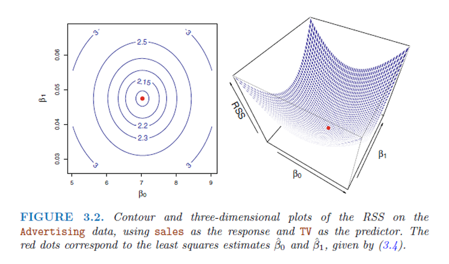
- For two independent variables \(X_1\) and \(X_2\) the model has the graphical representation:
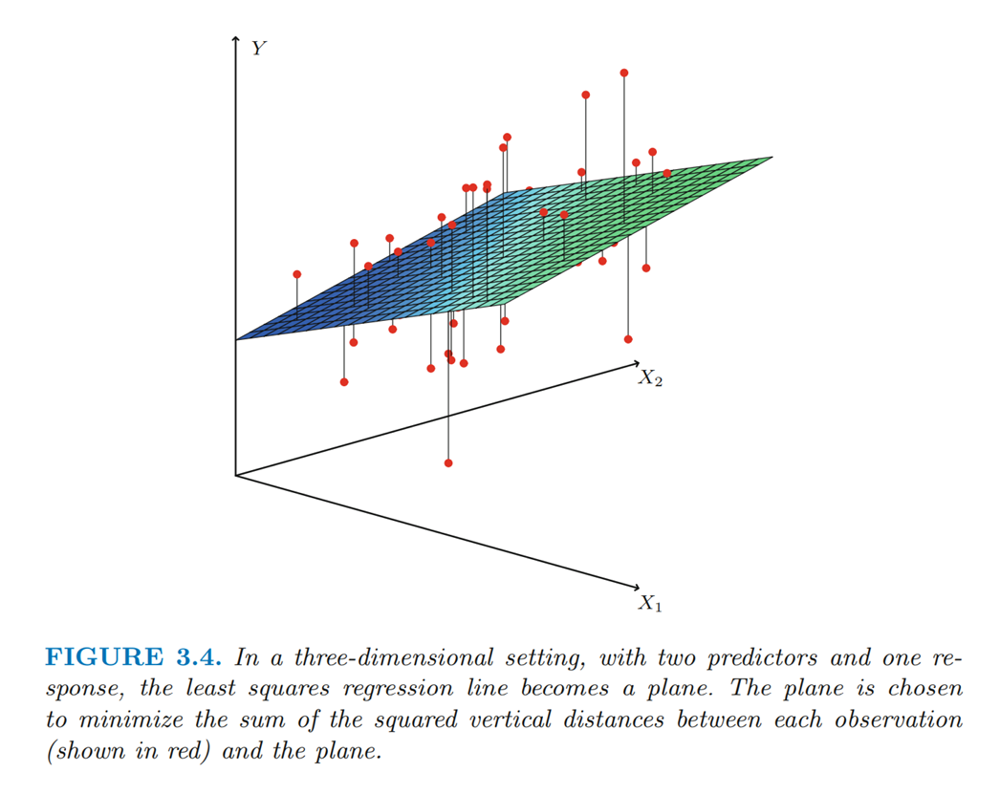
The estimate parameters \(\hat{\beta}_0, \hat{\beta}_1, \dots, \hat{\beta}_K\) internally account for the scale of the features \(X_1, \dots, X_K\).
Assumptions about the model structure:
[A1] The features \(X\) are free of random effects.
[A2] The error term has an expected value of zero, i.e., \(E[\varepsilon_i] = 0\)
[A3] All relevant features are in the model.
[A4] The underlying data generating process is linear in the features.
[A5] The variance of the error term is constant, i.e., \(Var[\varepsilon_i] = constant \ \forall \ i\)
[A6] The error terms are independent among each other, i.e., \(Cov[\varepsilon_i, \varepsilon_j] = \begin{cases} 0 & i \neq j \\ \sigma^2 & i = j \end{cases}\).
[A7] Additionally, the error terms are preferred to be normally distributed \(\varepsilon_i \sim \mathcal{N}(0, \sigma^2) \ \forall \ i\).
When these assumptions are satisfied, the estimated regression parameter \(\hat{\beta}_0, \hat{\beta}_1, \dots, \hat{\beta}_K\) are unbiased with the smallest standard errors. Thus, the estimate model can be generalized to yet not available feature values.
Linear regression is a special case of the generalized linear model (GLM).
2.1 Addressing questions about the model
Do all features or just a selected subset help to explain the target? (\(\rightarrow\) \(t\)-test and stepwise regression, Ridge or Lasso regression)
How well does the model fit the data? (\(\rightarrow\) \(R_{adj}^2\), \(AIC\), or \(BIC\))
How do we handle uncertainty in the prediction? (\(\rightarrow\) prediction confidence intervals)
The global F-test allows to evaluate whether the model overall has some explanatory power, i.e.,
\[H_0: \beta_1 = \cdots = \beta_K = 0 \text{ against at least one } \beta_k \neq 0\]
\[F = \frac{(TSS - RSS)/K}{RSS/(n - K - 1)}\]
The partial F-test allows us to evaluate whether a sub-set of features is statistically irrelevant.
Each feature can be tested whether it is relevant in explaining a proportion of the variation in the target by the statistical test by the t-test:
\[H_0: \beta_k = 0 \text{ against } H_1: \beta_k \neq 0\]
If the associate error probability of rejection the null hypothesis \(H_0\) – even though it is true – becomes reasonable small, then we reject the null hypothesis \(H_0\) in favor of the alternative hypothesis \(H_1\).
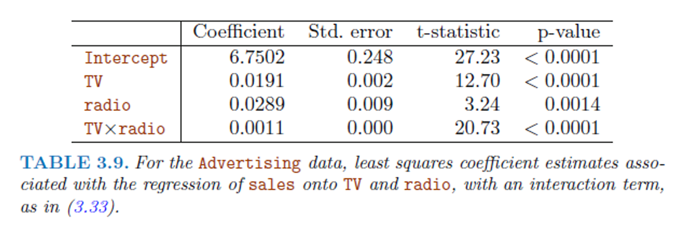
Regression is a statistical model involving an error distribution. The error distribution is associated with the irreducible error of the model. Confidence intervals around the regression plane or an individual point prediction allows us to assess the predictive quality of the model.
Stepwise, Ridge and Lasso feature selection will be discussed in Gareth James Chapter 6 “Linear Model Selection and Regularization”.
The multiple feature perspective of regression models allows control for confounding.
Example: Students tend to have higher debit balances than non-students, so their marginal default rate is higher than for non-students. But for each level of balance, students default less than non-students.
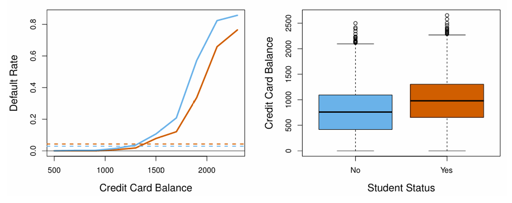
3 Flexibility of the regression model
Categorical features (see also Boehmke p 61)
Categorical variables in R are called factors.
Besides metric features regression can also handle factors (categorical features). Distance-based methods cannot handle factors well even after dummy or one-hot encoding.
Each factor level is encoded as a dummy variable.
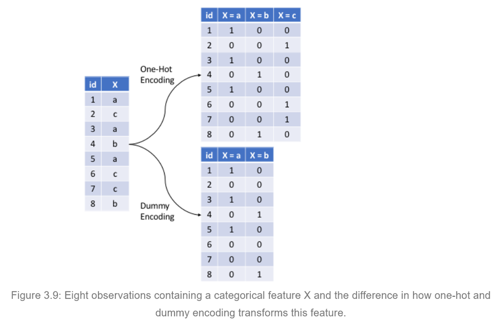
Due to the redundancy of the set of factor levels one factor level needs to be dropped in regression analysis explicitly from the model. It can be calculated implicitly.
R’s function in the regression family automatically encode factors as dummy variables.
Non-linear functions in the features:
Allows expressing non-linear relationships between the target and the features in a linear setting.
Each feature can be transformed, e.g., Box-Cox or Yeo-Johnson.
Each feature can be expressed as a polynomial function (see R’s function poly( )), i.e.,
\[\beta_{k_1} \cdot X_k + \beta_{k_2} \cdot X_k^2 + \beta_{k_3} \cdot X_k^3 + \cdots\]
- Polynomial functions bear the risk of overfitting the data and multicollinearity among the power terms.
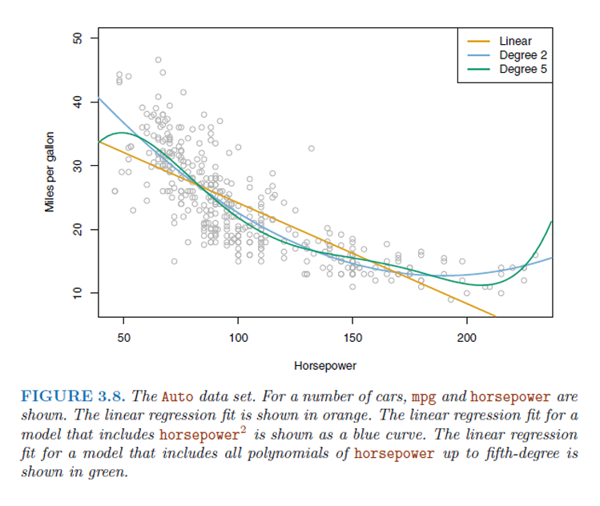
Interaction effects
Features many influence a target in non-linear unison rather than separately. One feature may enhance or diminish the effects of another variable.
This interplay among features is modelled by interaction effects, e.g.,
\[Y = \beta_0 + \beta_1 \cdot X_1 + \beta_2 \cdot X_2 + \beta_3 \cdot X_1 \cdot X_2 + \varepsilon\] \[= \beta_0 + (\beta_1 + \beta_3 \cdot X_2) \cdot X_1 + \beta_2 \cdot X_2 + \varepsilon\]
3.1 Caveats of Regression
As soon as the target variable is non-linearly transformed, the regression model becomes non-linear. It still can be evaluated by conditional effects plots.
Outlying observations must be identified and handled with care because they exhibit a strong influence on the estimated parameters \(\hat{\beta}_0, \hat{\beta}_1, \dots, \hat{\beta}_K\).
Highly correlated features are redundant. This redundancy increases the uncertainty (standard error) in the estimated parameters \(\hat{\beta}_0, \hat{\beta}_1, \dots, \hat{\beta}_K\).
Autocorrelation and heteroscedasticity leave the estimated parameters \(\hat{\beta}_0, \hat{\beta}_1, \dots, \hat{\beta}_K\) unbiased but usually inflate their standard errors.
4 Non-parametric \(k\)-nearest Neighbors
\(k\)-nearest neighbors’ estimation of a metric or class feature is a non-parametric method and needs to hold all sample observation in memory to perform the prediction.
It is only driven by the hyper-parameter \(k\) which cannot directly be estimated from the data.
To calculate the among-objects-distances, the scale of metric features needs to be set by the analyst perhaps by making the feature scales comparable.
Factor variables should be avoided, because the definition of object distances in terms of categorical features is ambiguous.
Irrespectively of whether the target \(Y\) is metric or categorical, the underlying predicted value \(\hat{Y}_0\) at location \(X_{01}, \dots, X_{0K}\) is
\[\hat{Y}_0 = \frac{1}{k} \cdot \sum_{X_{i1}, \dots, X_{iK} \in \mathcal{N}_k} Y_i\]
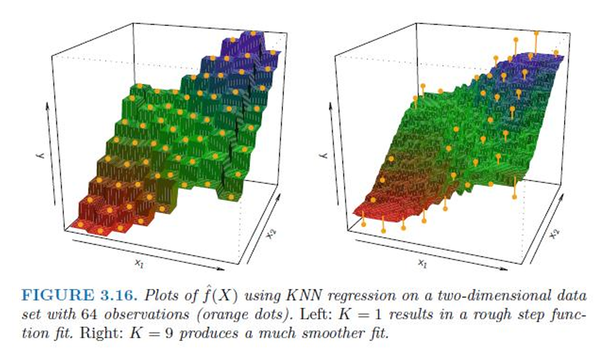
For \(k = 1\) the KNN fits the sample observations perfectly (most flexible fit). The bias is low, but the sample-to-sample variance is high.
See R-script kNNRegression.r.
5 Parametric Logistic Regression
Logistic regression is a parametric supervised classification procedure for binary outcomes.
The target variable is a factor (categorical variable) describing the mutually exclusive and exhaustive class membership of each observation.
The objective is to predict the class membership probabilities for each observation. Overall possible classes these probabilities must sum to one, because the classes are exhaustive and mutually exclusive.
The number of training observations in each class should preferably be balanced as done in retrospective case-control studies.
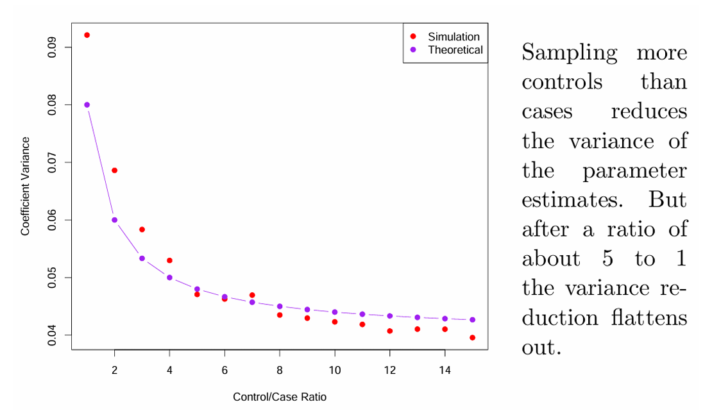
For a binary (just two categories) target variable the target variable becomes
\[Y_i = \begin{cases} 1 & event \ happening \\ 0 & event \ not \ happing \end{cases}\]
and the predicted value given at a given set features becomes
\[\hat{p}_i = \Pr(Y_i = 1|x_{i1}, \dots, x_{iK}) = \frac{\exp(\hat{\beta}_0 + \hat{\beta}_1 \cdot x_{i1} + \cdots + \hat{\beta}_K \cdot x_{iK})}{1 + \exp(\hat{\beta}_0 + \hat{\beta}_1 \cdot x_{i1} + \cdots + \hat{\beta}_K \cdot x_{iK})}\]
Per standard assumption \(\Pr(Y_i = 1|x_{i1}, \dots, x_{iK})\) follows a binary (binomial) distribution with an associated likelihood function.
The numerical optimization of the associated log-likelihood function finds the estimated parameters \(\hat{\beta}_0, \hat{\beta}_1, \dots, \hat{\beta}_K\).
The probabilities are inherently non-linear with respect to the features \(X_1, \dots, X_K\)
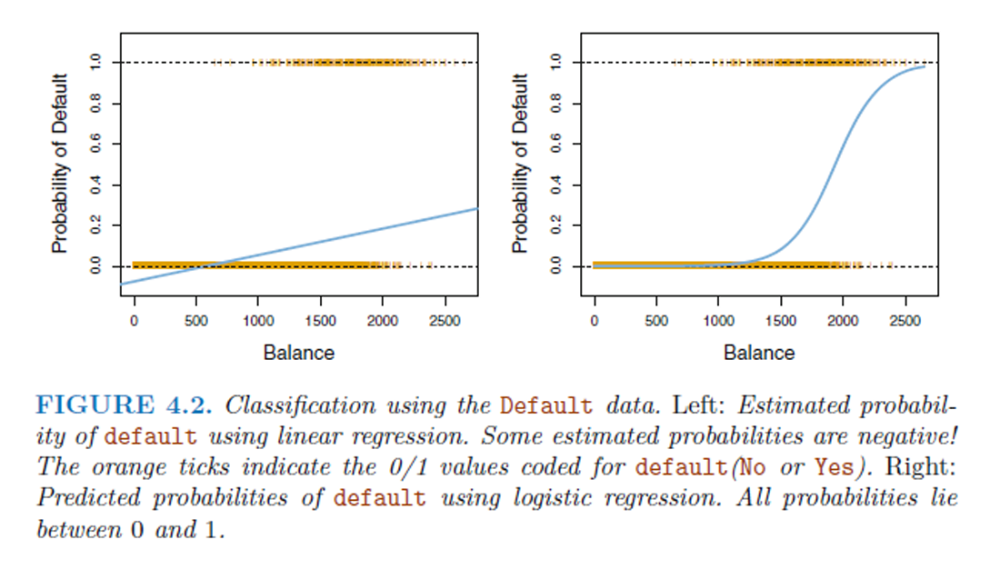
but after the transformation \(\log\left(\frac{\hat{p}_i}{1-\hat{p}_i}\right) = \hat{\beta}_0 + \hat{\beta}_1 \cdot x_{i1} + \cdots + \hat{\beta}_p \cdot x_{ip}\) the logits \(\log\left(\frac{\hat{p}_i}{1-\hat{p}_i}\right)\) becomes are linear function in \(X_1, \dots, X_k\) because \(\log\left(\frac{\hat{p}_i}{1-\hat{p}_i}\right) \in [-\infty, \infty]\).
The estimated parameters \(\hat{\beta}_0, \hat{\beta}_1, \dots, \hat{\beta}_K\) again capture the varying scales of \(X_1, \dots, X_k\). Thus, scaling of the features is not required.
Features that are based on factors, interaction effects and polynomial specifications can be easily accommodated.
Selection of relevant features can again be achieved with stepwise regression.
Logistic regression is a special case of the generalized linear model (GLM).
Warning: For well separated classes logistic regression can become numerically unstable (problem of high discrimination).
6 Multinomial Logistic Regression
Logistic regression can be extended to model more than two classes \(K > 2\).
The estimated probabilities again satisfy the constraint: \(\sum_{k=1}^{K} \Pr(Y_i = k|X = x) = 1\).
The model uses log-odds ratios to estimate a set of \(K - 1\) regression coefficients with the last class used by convention as reference:
\[\log\left(\frac{\Pr(Y_i = k|X = \mathbf{x}_i)}{\Pr(Y_i = K|X = \mathbf{x}_i)}\right) = \beta_{0k} + \beta_{1k} \cdot x_{i1} + \cdots + \beta_{pk} \cdot x_{ip}\]
The probability for an individual class \(k\) becomes
\[\Pr(Y_i = k|X = \mathbf{x}_i) = \frac{\exp(\beta_{0k} + \beta_{1k} \cdot x_{i1} + \cdots + \beta_{pk} \cdot x_{ip})}{1 + \sum_{k=1}^{K-1} \exp(\beta_{0k} + \beta_{1k} \cdot x_{i1} + \cdots + \beta_{pk} \cdot x_{ip})}\]
and for class \(K\)
\[\Pr(Y_i = k|X = \mathbf{x}_i) = \frac{1}{1 + \sum_{k=1}^{K-1} \exp(\beta_{0k} + \beta_{1k} \cdot x_{i1} + \cdots + \beta_{pk} \cdot x_{ip})}\]
7 Discriminant Analysis versus Logistic Regression (skipped)
Logistic regression directly estimates conditional \(\Pr(Y_i = k|X_i)\) while discriminant analysis estimates the multivariate class likelihood \(f(X_i|Y_i = k)\) and then applies the Bayesian theorem to obtain the posterior probability \(\Pr(Y_i = k|X_i)\).
For small sample sizes and approximately normal distributed \(N(X_i|Y_i = k)\) classes discriminant analysis is superior.
Due to the distributional assumption, discriminant analysis performs best for metrically scaled variables. However, it is relatively robust when a few factor variables are involved.
It is easier to handle more than \(K > 2\) classes in discriminant analysis.
Both methods do not require that the features are normalized or standardized.
8 Use of Bayesian Classification
Let \(\pi_k \ with \ k \in \{1, 2, \dots, K\}\) be the prior probability of class \(k\), i.e., an observation \(Y_i\) coming from class \(k\) without to any additional information.
Combined with the likelihood \(f(X_i|Y_i = k)\) we get the Bayesian posteriori probability
\[\Pr(Y_i = k|X_i) = \frac{\pi_k \cdot f(X_i|Y_i = k)}{\underbrace{\sum_{l=1}^{K} \pi_l \cdot f(X_i|Y_i = l)}_{=f(X_i)}}\]
An object \(i\) is assigned to class \(k\) for which \(\max_k \Pr(Y_i = k|X_i)\) is the largest.
To obtain the posteriori probabilities, the prior probabilities and the likelihood need to be estimated from the data.
The exact functional form of the likelihood needs to be fully specified. In discriminant analysis it is usually the multivariate normal distribution with either a common or class-specific covariance matrix.
8.1 Example with \(K = 2\) and \(p = 1\)
For \(K = 2\) and \(p = 1\) the two normal class distributions have parameters
\(N(x_i|\mu_1, \sigma_1^2)\) with a mixing proportion \(\pi_1\) and
\(N(x_i|\mu_2, \sigma_2^2)\) with a mixing proportion \(\pi_2\).
For \(\sigma_1^2 = \sigma_2^2\) the Bayesian decision function separating both classes becomes
\[\delta_k(x_i) = x_i \cdot \frac{\mu_k}{\sigma^2} - \frac{\mu_k^2}{2 \cdot \sigma^2} + \log \pi_k\]
and \(x_i\) is assigned to class \(k\) for which \(\delta_k(x_i) > \delta_l(x_i)\) with \(k \neq l\).
Theoretical and empirical mixture distributions:
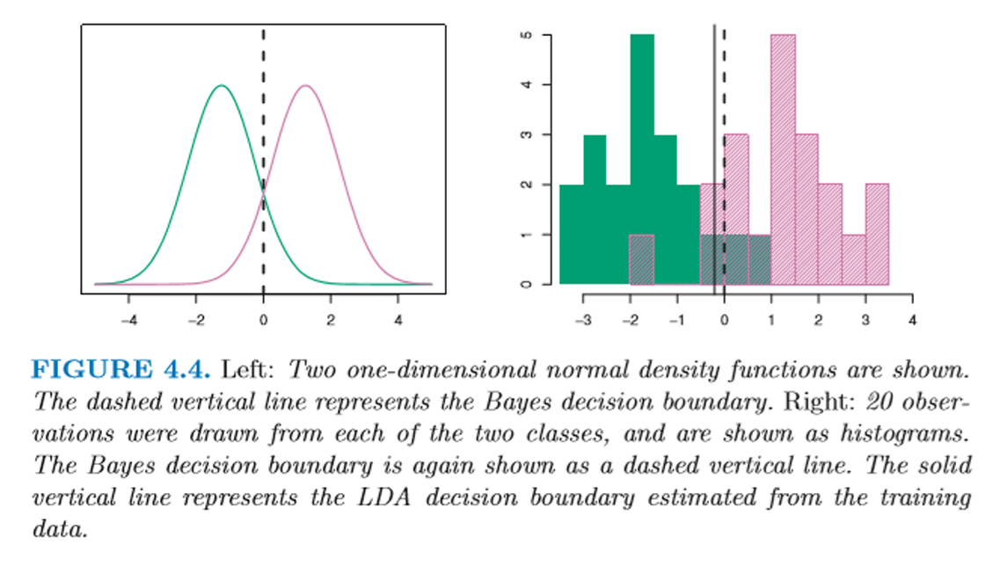
The estimated parameters are:
\(\hat{\pi}_k = \frac{n_k}{\sum_{l=1}^{K} n_l}\)
\(\hat{\mu}_k = \frac{1}{n_k} \cdot \sum_{i \in \{y_i = k\}} x_i\)
\(\hat{\sigma}^2 = \frac{1}{n-K} \cdot \sum_{k=1}^{K} \sum_{i \in \{y_i = k\}} (x_i - \hat{\mu}_k)^2\)
9 Linear Discriminant functions for \(K \geq 2\), \(p \geq 2\) and \(\Sigma_k = \Sigma_l \ \forall k, l\)
For two and more classes and more than one feature but identical group covariance matrices the Bayesian classification functions are:
\[\delta_k(\mathbf{x}_i) = \mathbf{x}_i^T \cdot \mathbf{\Sigma}^{-1} \cdot \boldsymbol{\mu}_k - \frac{1}{2} \cdot \boldsymbol{\mu}_k^T \cdot \mathbf{\Sigma}^{-1} \cdot \boldsymbol{\mu}_k + \log \pi_k\]
This is a linear function in \(\mathbf{x}_i\)
Again, an object \(i\) is assigned to the group for which \(\delta_k(\mathbf{x}_i)\) is the largest.
Example with \(K = 3\) and \(p = 2\)
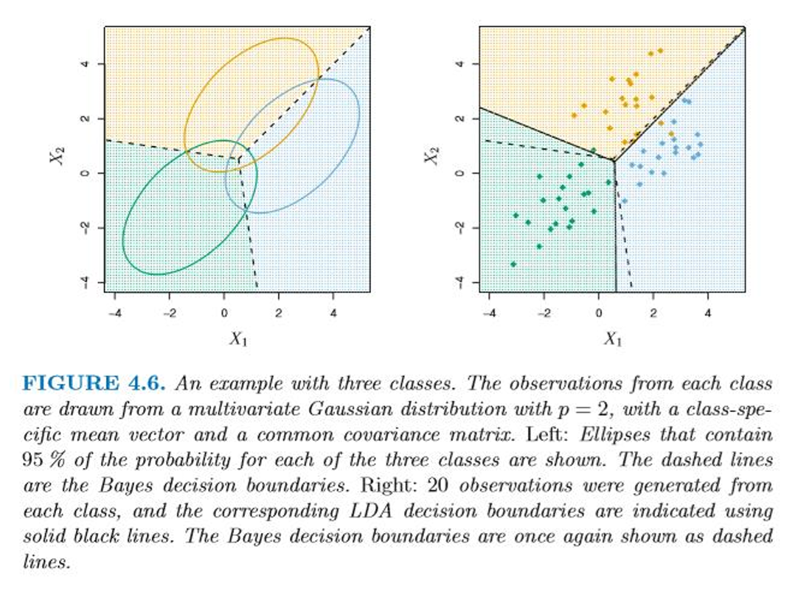
10 Comparison of the different classification methods
Structurally linear discriminant analysis and logistic regression are similar because in both cases the decision rules are expressed as linear functions in \(X_i\).
However, discriminant analysis makes the stronger assumption of applying multivariate normal distributions. If the Gaussian assumption is not satisfied, then logistic regression may outperform linear discriminant analysis.
Discriminant analysis relies on substantially more estimated parameters ([a] the group probabilities, [b] vectors of group means and [c] group covariance matrices).
Discriminant analysis belongs to the class of generative learners because it focuses on the joint distribution \(\Pr(X, Y)\) whereas logistic regression is a discriminative learner because it focuses on the conditional distribution \(\Pr(Y|X)\).